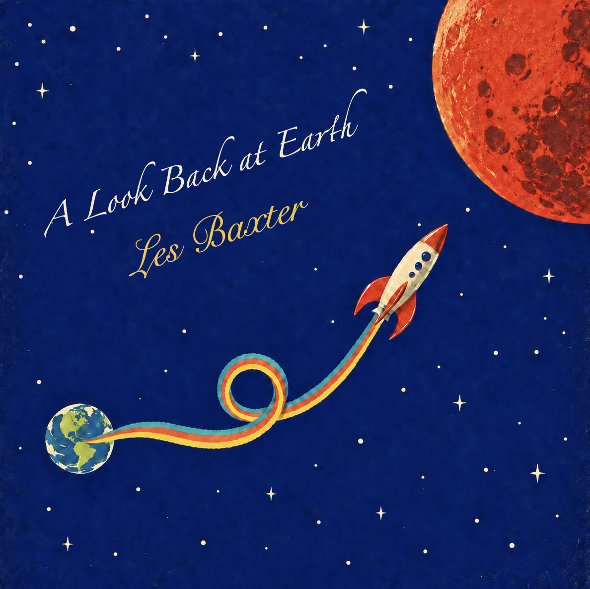

01 / Album cover
A Look Back
at Earth
Les Baxter
Individual project
AI for Interdisciplinary Design
Arizona State University
Final outcome
Album cover

Process
01 / Album cover
Les Baxter
Individual project
AI for Interdisciplinary Design
Arizona State University
Final outcome

Process